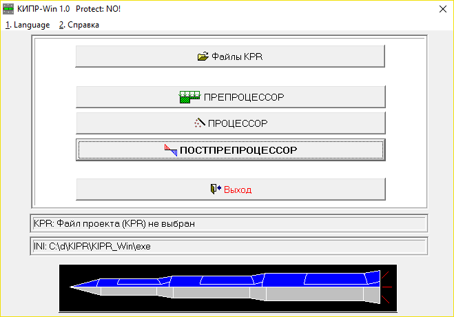
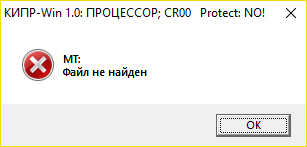
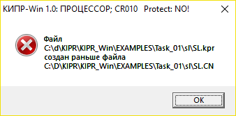
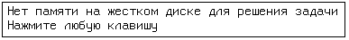
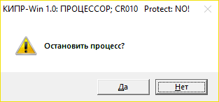
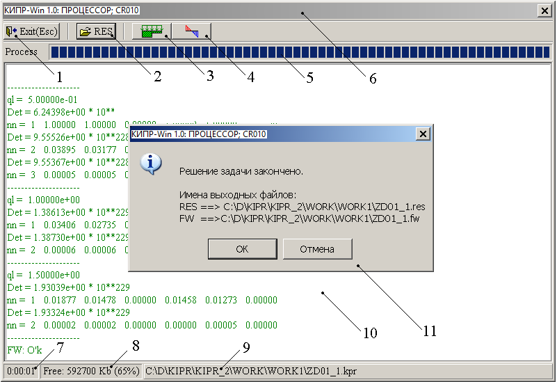
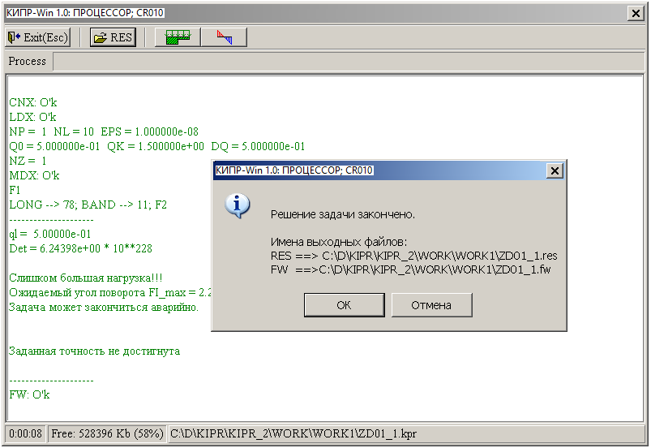
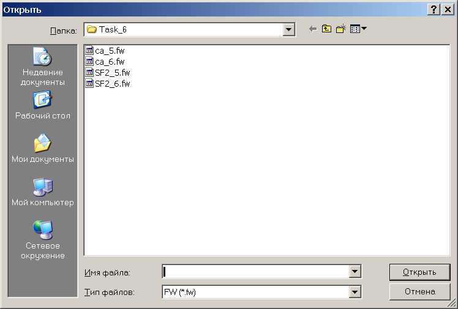
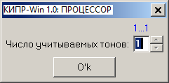

5.3.2.1. Старт ПРОЦЕССОРА
5.3.2.2. Завершение работы ПРОЦЕССОРА
5.3.2.3. Размещение результатов выполнения
программы
5.3.2.4. Понятие о порциях
5.3.2.5. Технология работы с программой
CR060
Состав ПРОЦЕССОРА представлен в таблице.
Решение задачи с порядковым номером <**> осуществляется с помощью программы
|
CR**0 |
где 01 ≤ ** ≤ 10.
При старте ПРОЦЕССОРА могут возникнуть три ситуации.
Ситуация 1. Система КИПР-Win стартует впервые.
В этом случае “Меню ОБОЛОЧКИ системы” выглядит следующим образом:

При этом в нижней части “Меню ОБОЛОЧКИ системы” вместо имени файла-проекта KPR будет выведено сообщение: “KPR: Файл проекта не выбран”.
Выбор позиции “ПРОЦЕССОР” в “Меню ОБОЛОЧКИ системы” в этом случае приводит к появлению на экране следующего сообщения:

Это сообщение означает, что у ПРОЦЕССОРА нет данных о файле-проекте KPR. Здесь имеется два варианта действий пользователя cиcтемы:
Ситуация 2. Система КИПР-Win стартует вновь.
Выбор позиции “ПРОЦЕССОР” в “Меню ОБОЛОЧКИ системы” приводит к старту ПРОЦЕССОРА, который будет работать с расчетным случаем, информация о котором содержится в ранее выбранном файле-проекте KPR.
Ситуация 3. ПРОЦЕССОР системы может стартовать и с помощью команд ПРЕПРОЦЕССОРА системы.
После старта ПРОЦЕССОРА дальнейшие действия пользователя регламентируются запросами стартовавшей программы, которых, в принципе, нет. Исключение составляет программа CR060.
На этом исключении мы остановимся ниже, а пока перейдем к основным ситуациям, встречающимся при работе ПРОЦЕССОРА.
Если один из файлов исходных данных (CN, LD, MD) отредактирован в ПРЕПРОЦЕССОРЕ, т.е. Вы “потрогали” его, а “по забывчивости” файл KPR c отредактированным (“потроганным”) файлом исходных данных не создан вновь, то после старта программы ПРОЦЕССОРА на экране дисплея появляется сообщение об ошибке в технологии использования системы КИПР-Win:

Действия пользователя: войти в ПРЕПРОЦЕССОР и создать новый файл KPR c отредактированным (“потроганным”) файлом исходных данных, стартовав ПРОЦЕССОР с помощью соответствующей команды ПРЕПРОЦЕССОРА (7. Проц.).
При решении той или иной задачи ПРОЦЕССОРА на жестком диске создается несколько наборов данных с расширением *.wrk. Если памяти на жестком диске не хватает, то на экране дисплея появляется сообщение

Действия пользователя: освободить память на жестком диске и вновь войти в ПРОЦЕССОР.
Возможны два варианта завершения работы ПРОЦЕССОРА:
Если по какой-либо причине необходимо остановить ПРОЦЕССОР, необходимо в процессе его работы нажать на клавишу клавиатуры <Esc>. В этом случае на экране дисплея появится запрос об остановке процесса вида:

Если клавиша <Esc> была нажата случайно, то необходимо ответить на запрос отрицательно, и работа ПРОЦЕССОРА возобновится. Если на этот запрос ответить утвердительно, то ПРОЦЕССОР завершит свою работу.
Во втором случае (по окончании решения задачи) экран дисплея будет выглядеть так, как показано на рис. 1.

Рис. 1
Числами на этом рисунке обозначены:
Успешным считается завершение задачи, если окно с информацией об окончании решения задачи выглядит аналогично изображенному на рис. 1 и в конце протокола решения присутствует сообщение “FW: O’k”.
Не совсем успешным считается завершение задачи, в которой при завершении ее решения присутствует как сообщение “FW: O’k”, так и некоторые сообщения перед ним.
Так в задачах CR010, CR020, CR050, CR090, CR100 могут присутствовать сообщения типа приведенных на рис. 2 (“Заданная точность не достигнута”).

Рис. 2
Если при этом присутствует сообщение “FW: O’k” (в задачах CR010, CR020), то для всех шагов по нагрузке (перед аварийным шагом) результаты сохраняются.
Эти сообщения могут возникать при решении геометрически или физически нелинейной задачи.
Действия пользователя:
Если при этом отсутствует сообщение “FW: O’k” (в задачах CR050, CR090, CR100), то задача закончилась аварийно. Никаких результатов в этом случае нет.
Если в задаче CR050 присутствует сообщение “FW: O’k”, а перед этим сообщение присутствует сообщение “Для тона (например, 3) частота не найдена”, то это значит, что для предыдущих тонов результаты получены, а в заданном диапазоне частот, ограниченным сверху параметром частоты ωk текущая частота не существует.
Действия пользователя:
На второй ситуации остановимся подробнее.
Пусть в заданном диапазоне параметра ω0 ≤ ω ≤ ωk найдено только два тона: ω1* и ω2*.
Для продолжения поиска необходимо:
Если в задачах CR090 и CR100 появилось сообщение “В заданном диапазоне критическое значение нагрузки не найдено”, то задача закончилась аварийно. Никаких результатов в этом случае нет.
Действия пользователя:
В результате выполнения программы CR**0 создаются следующие файлы с результатами ее работы
|
name.res |
|
name.fw |
Имя name в этих файлах совпадает с соответствующим именем файла-проекта name.kpr.
Файл name.res содержит протокол решения задачи.
Файл name.fw содержит результаты решения задачи.
Результаты в файле name.fw накапливаются порциями. Порцией является набор данных, характеризующих напряженно-деформированное состояние конструкции для какого-либо методического параметра:
Исключение составляют задачи 09 и 10, в которых результаты имеют одну порцию.
Программа CR060 использует при своей работе результаты (частоты и формы собственных колебаний), полученные с помощью программы CR050. Поэтому после старта программы CR060 на экране дисплея появляется “Приглашение-FW” (рис. 3).

Рис. 3. Приглашение-FW
В этом приглашении необходимо выбрать файл FW (*.fw), соответствующий решаемой задаче. Если соответствие отсутствует, то на экране дисплея появляется сообщение типа “Файл C:\WORK\TASK6\sf_2_6_9.fw создан программой CR090”, “Файл MD (CR050) (n0) не соответствует файлу LD (CR060) (n0)” и т.д.
Первое сообщение указывает, что вместо файла, содержащего частоты и формы колебаний, выбран файл, содержащий критические нагрузки и формы потери устойчивости.
Действия пользователя: выбрать файл FW, созданный программой CR050 для заданного программе CR060 расчетного случая, либо создать программой CR050 такой файл заново.
Во втором случае несоответствие файла MD файлу LD заключается в следующем. В файле методических параметров MD для программы CR050 собственные частоты отыскивались для одной гармоники n0 (методический параметр n). В файле нагрузок LD для программы CR060 задана другая гармоника n0 (в законе нагружения - n).
Действия пользователя:
Если при выборе файла FW замечаний не последовало, то появляется приглашение (рис. 4) для ввода числа учитываемых тонов.

Рис. 4
Действия пользователя: ввести число учитываемых тонов (в скобках указаны границы числа тонов).